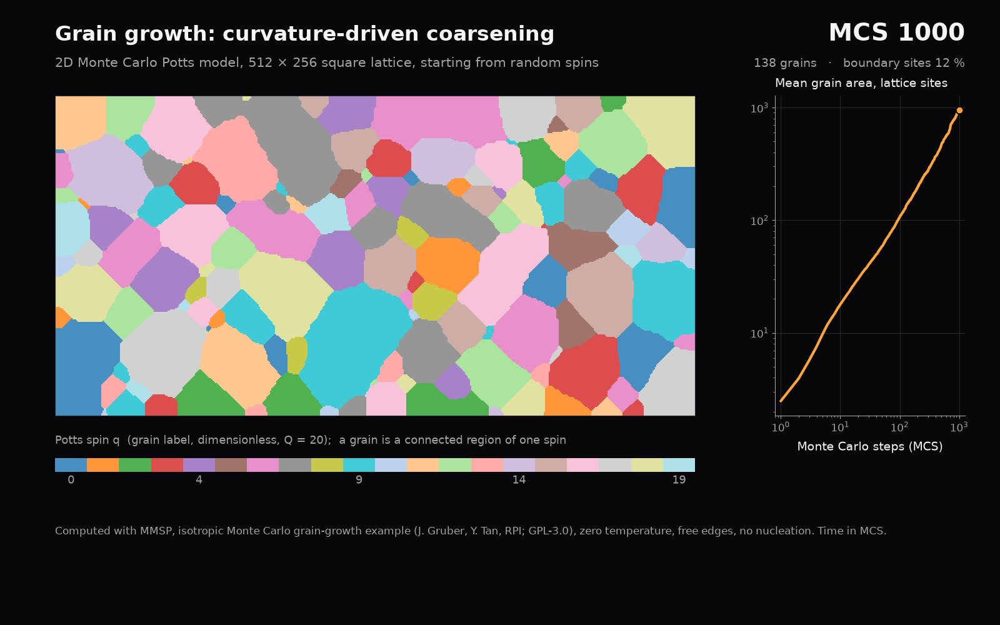
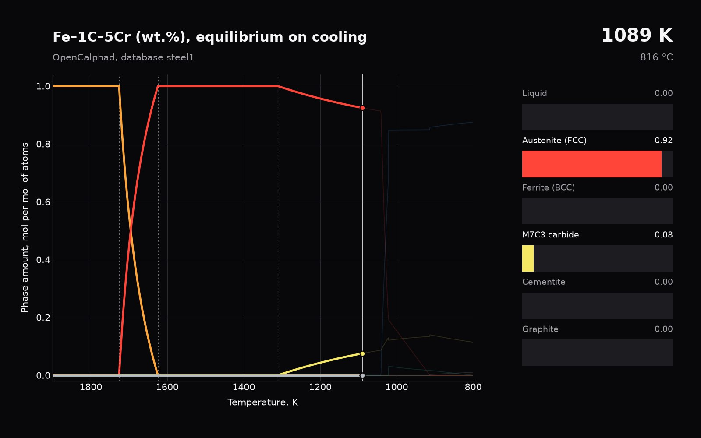

CCT predictor
Start and finish curves of ferrite, pearlite and bainite, and martensite, at the cooling rates you choose.
Products / MetaPro
Type the composition and the grain size. MetaPro predicts how the steel transforms on cooling, and reads transformation points out of your dilatometer curves.

Grain growth in a Monte Carlo Potts model, computed with MMSP, an open mesoscale code (GPL-3.0), in a separate study; it is not part of MetaPro. Growth only: no nucleation, and no physical time or length scale.
Start and finish curves of ferrite, pearlite and bainite, and martensite, at the cooling rates you choose.
Ae1, Ae3, Acm, Bs and Ms from composition, each with the published formula it comes from.
The transformation start of a dilation curve by the offset method.
Load measured start temperatures from a spreadsheet and plot them on the predicted diagram.
An Fe-1C-5Cr steel cooled from 1900 K to 800 K. Austenite forms from the liquid by 1624 K, M7C3 carbide appears at 1311 K, and ferrite and cementite take over near 1040 K. The bars show each phase's amount at the marked temperature.

Calculated with OpenCalphad, database steel1, through a separate CALPHAD tool. SiM2Pro's CALPHAD interface is in development.
For low alloy steels. In development: a CALPHAD interface, to bring in equilibrium data from an outside thermodynamics solver.
The part, the process, the question. We reply with what a study would take and what it would show.